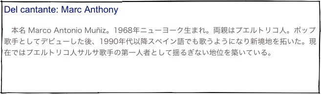

Canción de diciembre
“Dímelo”
Marc Anthony
Canción de diciembre
“Dímelo”
Marc Anthony


La gente anda diciendo por ahí
que tú quisieras acercarte a mí
Si tú supieras que te quiero amar
que hasta el cielo te quiero llevar
Coro:
No me dejes solo con mi corazón
que está enloquecido con esta pasión
Si es que me deseas, nena, dímelo
porque por tu amor estoy muriendo yo
Ay dímelo, ven dímelo
porque por tu amor estoy muriendo yo
Ay dímelo, ven dímelo
porque por tu amor estoy muriendo yo
Si yo pudiera acariciar tu piel
tu cuerpo entero quiero conocer
Esta pasión no me deja dormir
Este deseo no me deja vivir
Repetir el coro
Gramática: progresivo 進行相
Estoy muriendo. (I am dying.)
英語と同様にスペイン語にも進行相があります。形も英語とよく似ています。英語のbe 動詞にあたるのは、ここでは estar 。そして英語では動詞の原形＋ -ing でできる現在分詞は、スペイン語では 不定詞＋ -ndo で作ります。
Están cantando. (They are singing.)
¿Qué estás haciendo? (What are you doing?)
歌詞の中に出てくる muriendo は、ちょっと不規則で、不定形 morir + 現在分詞の語尾endo => moriendo が muriendo となっています。
The people are talking out there
that you want to approach me
If you knew that I want to love you
that to the sky I want to take you
Don’t leave me alone with my heart
that went mad with this passion
If it is that you want me, baby, tell it to me
because for your love I am dying
Ay, tell it to me, come on, tell it to me
becuase for your love I am dying
Ay, tell it to me, come on, tell it to me
becuase for your love I am dying
If I could caress your skin
your whole body I want to know
This passion doesn’t let me sleep
Thos desire doesn’t let me live
Gramática: pronombres con imperativo 命令形と代名詞
スペイン語では目的格の代名詞を伴った動詞の命令形では、代名詞が命令形の後ろにくっついて一つの単語になります。
Dímelo. = di (decir の命令形) + me + lo (Tell it to me.)
Dime. (Tell me.) の時はアクセントが後ろから２番目で、アクセント符号をつける必要はありませんが、Dímelo. (Tell it to me.) では音節数が増えたためにアクセント符号が必要になります。
Letra de la canción:
Gramática: imperativo negativo 否定の命令
スペイン語の命令形の表現の内、tú に対する肯定の命令は、現在時制の三人称単数の形と同じですから、「一人にしておいて」と言うのは次のようになります。
Déjame solo. (Leave me alone.)
これが、「一人にしないで」という否定の命令では、動詞は接続法という形になり、肯定の命令では目的格代名詞が動詞の後ろにくっついていたのが、平叙文と同じように動詞の前に置かれることになります。
No me dejes solo. (Don't leave me alone.)